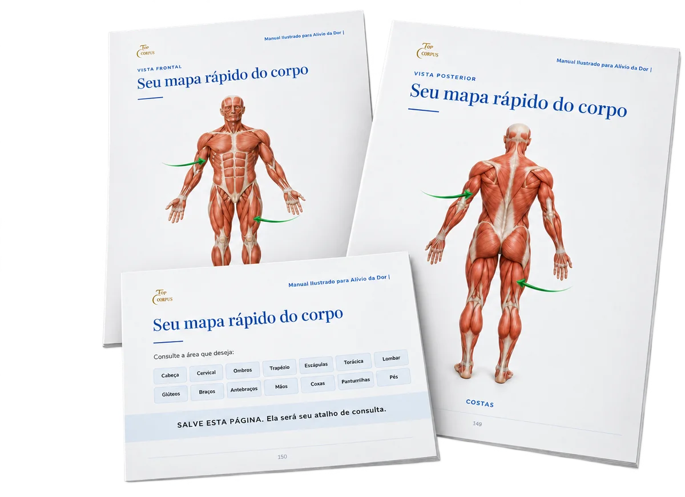
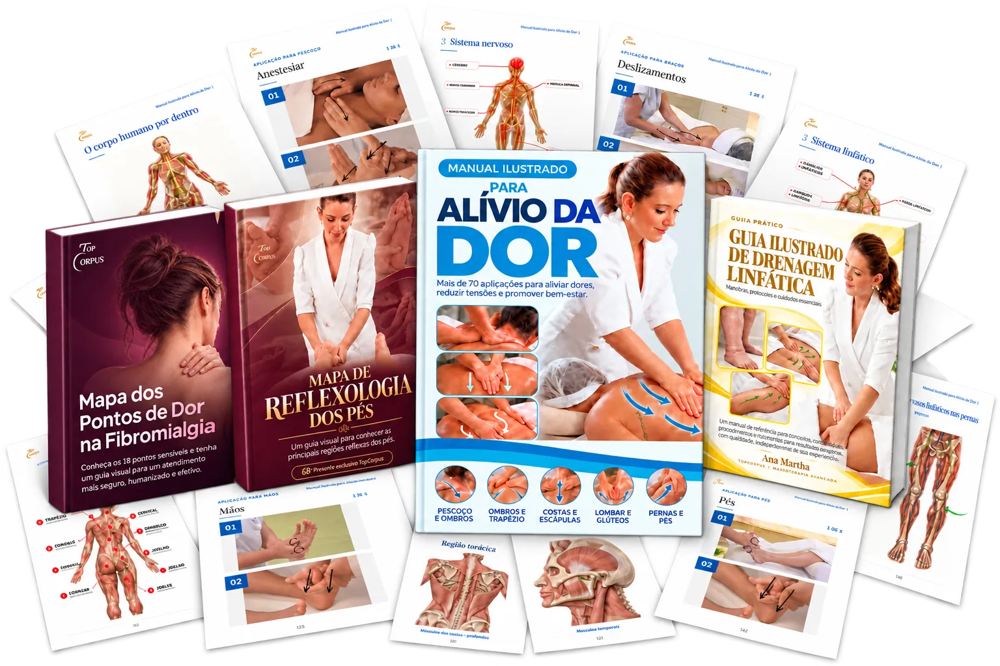
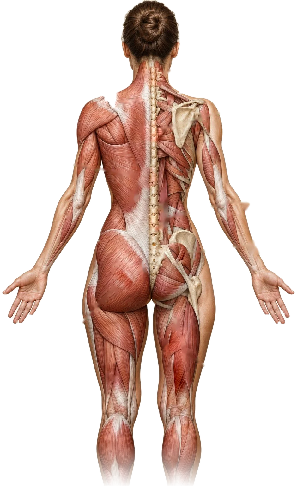
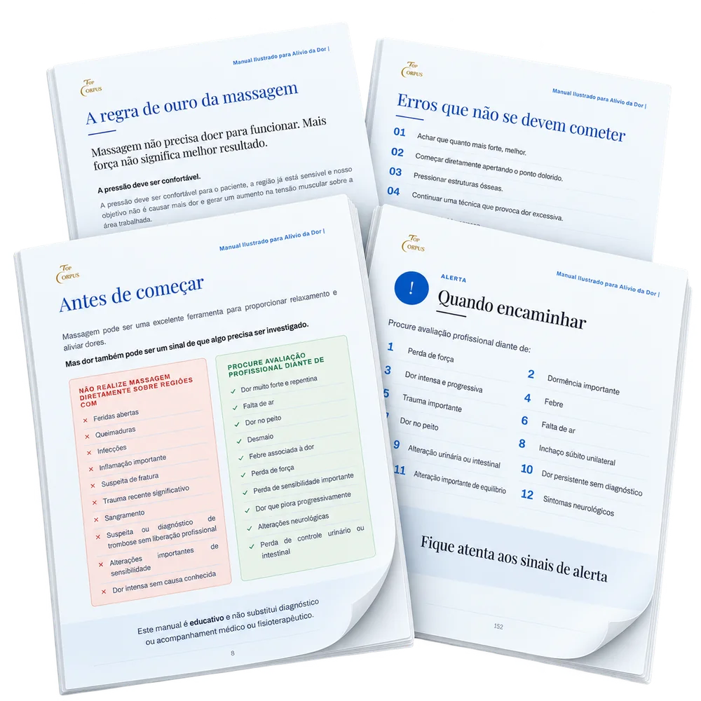
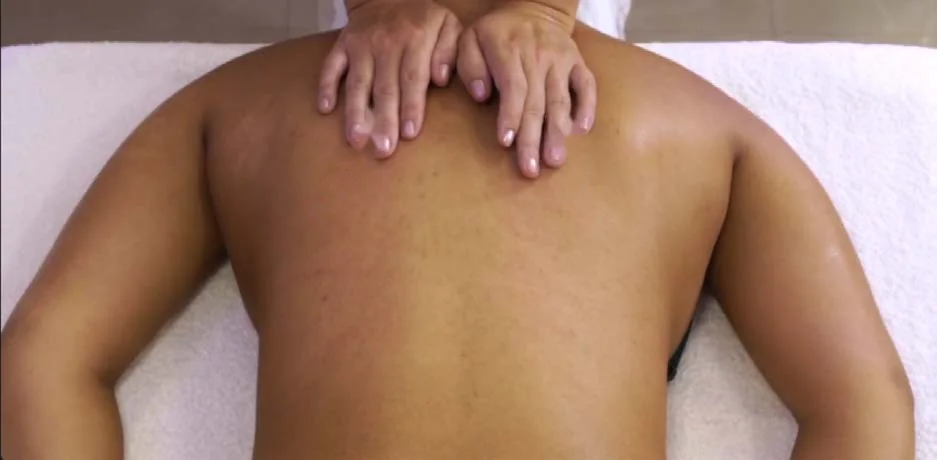
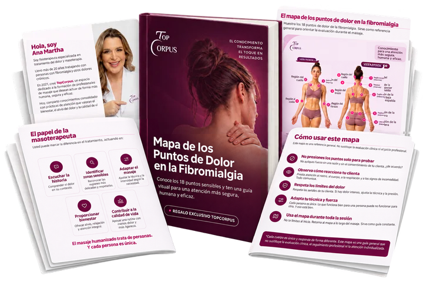
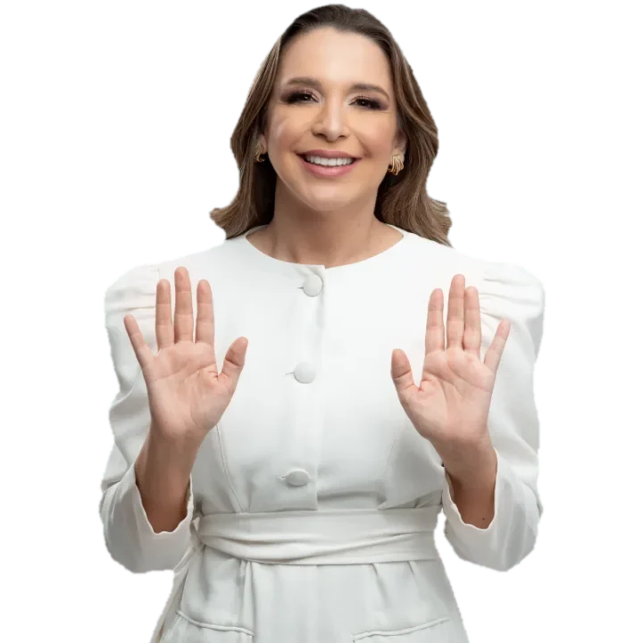
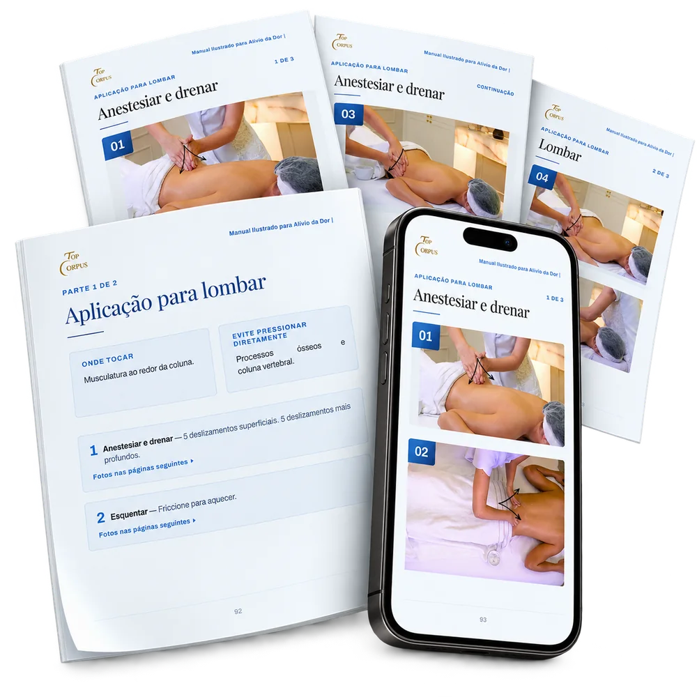

Encuentra dónde duele y ve directo a la página correcta
El mapa del cuerpo te lleva hasta la región, sin tener que buscar videos guardados en el celular.
Alivia el dolor muscular con más de 70 Masajes Ilustrados que muestran dónde tocar, cómo tocar y qué presión usar en cada región del cuerpo


Se levanta de la silla y ya se queja. Al final del día ya no aguanta tanto dolor.
La nuca se endurece y la tensión sube hasta las sienes.
El estrés del día se acumula y los hombros quedan casi “pegados” a las orejas.
Ese dolor entre los omóplatos que no se va.
Corrientazo, ardor y hormigueo.
Un punto sensible que se endurece y extiende la molestia.
Después de horas de pie o sentado, las piernas pesan y parecen hinchadas.
Rígida, con dolor cerca de las sienes.
De tanto escribir en el teclado y sostener el celular.
Sí, sirve, y por eso lo hice como lo hice.
El Manual muestra cuándo NO dar masaje y derivar a un profesional de la salud, como ante un dolor fuerte y repentino, fiebre junto con el dolor, pérdida de fuerza e hinchazón súbita en una pierna.
Aquí encuentras dónde tocar, qué presión usar, por cuánto tiempo y lo que no se debe tocar de ninguna manera, para cada región.
Al final, saber cuándo parar también es parte del masaje.
Quiero mi Manual Ilustrado

Zona lumbar trabada, cuello rígido, pierna pesada…
Para cada uno, el Manual muestra la foto de la zona, dónde poner la mano, cuánto presionar y por cuánto tiempo.
Abres en la región que duele y ya puedes empezar:

El mapa del cuerpo te lleva hasta la región, sin tener que buscar videos guardados en el celular.
El Método Validado que uso desde hace años. Cada maniobra sigue la misma secuencia, desde el primer toque hasta la relajación final:
Sin términos técnicos: lenguaje directo, con fotos en cada maniobra.
El Manual trabaja con una escala del 1 al 10 y nunca pasa de 6. La regla que enseño desde hace años: el cuerpo no tiene que luchar contra tus manos.
Se toma un medicamento, se acuesta y espera a que pase.
Pero tus manos también pueden ayudar.
La mayoría de los dolores del día a día nace de un músculo sobrecargado, tenso, sensible y cansado. Y un toque bien hecho, en el lugar correcto, con la presión correcta y en la dirección correcta, trae un alivio de verdad.
El masaje no reemplaza el tratamiento ni la orientación del médico.
Es un aliado que, sumado a los cuidados que la persona ya tiene, trae más alivio y de forma más rápida.

Una sesión de masaje en la espalda, con el paso a paso completo de dónde poner las manos, cuánta presión usar en cada movimiento y dónde no tocar.

Me mandas tu duda directo por WhatsApp y recibes respuesta en el momento. Sea sábado, domingo, feriado o de madrugada.
La reflexología es una técnica milenaria que trabaja puntos específicos de los pies para aliviar dolores en otras partes del cuerpo. Aquí recibes un mapa ilustrado de esos puntos, para ampliar tu repertorio.

Una guía visual con las principales regiones linfáticas, los caminos y la dirección de cada movimiento, para que apliques el drenaje sin tener que adivinar hacia qué lado debe ir.

Conoce los 18 puntos sensibles y ten una guía visual para maniobras más seguras y humanizadas.

Mi papá, que siempre fue mi héroe, tuvo un accidente grave. Se fracturó los huesos de la pierna, se quejaba de dolor y, aunque tomaba varios medicamentos, no lograba dormir bien.
Yo era solo una niña y quería mucho aliviar su dolor, pero no tenía técnica ni conocimiento. Solo tenía mis manos, todavía tan pequeñas.
Aun así, empecé a darle masajes en la pierna, con todo mi amor.
Hasta que un día me dijo algo que nunca olvidé:
“Hija, hoy dormí sin dolor porque me diste un masaje. Tus manos son lo máximo.”
En ese momento tuve la certeza: quería usar mis manos para aliviar dolores.
Crecí, me gradué en Fisioterapia y lo convertí en mi profesión.
Mucho gusto, soy Ana Martha, fisioterapeuta y fundadora de TopCorpus.
Estoy casada, soy mamá de dos niñas y desde hace 20 años alivio dolores con masaje humanizado.
Gané un premio internacional en Estados Unidos, estuve en varios programas de TV y creé el curso de masoterapia humanizada más grande de Brasil, con más de 60 mil alumnas en 60 países.
Y fue pensando en aquella niña de 6 años, que solo tenía sus manos y muchas ganas de ayudar, que puse en este Manual el paso a paso para que alivies el dolor de quien lo necesita.
Tienes más poder en tus manos de lo que imaginas.
Quiero aliviar doloresMuchas de mis alumnas empezaron igual: aliviando el dolor de alguien de casa. Primero el esposo, después la mamá, después la amiga que se enteró.
Y un día se dieron cuenta de que lo que hacían por amor tenía valor. Que había gente buscando exactamente eso.
Hoy muchas de ellas hicieron del masaje su profesión, y algunas, un ingreso extra que encaja en su rutina.
No tiene que ser tu plan ahora. El Manual empieza por la persona que amas. Pero es bueno saber que esa puerta existe, y que empieza justo aquí.
Tienes más poder en tus manos de lo que imaginas.
Quiero empezar por el Manual
Sumando todo, el valor total sería: R$297,00
De R$297,00 por
R$27
ahorras R$ 270
Asegura el tuyo y recíbelo ahora mismo por correo electrónico
Quiero el Manual y todos los bonosJosiane Gomes Machado Ayer, 20:13
Tengo un consultorio en mi casa, ya trabajaba como terapeuta integrativa y ahora ya estoy teniendo mis primeras clientas de Masoterapia y estoy muy feliz con los resultados. Ayer atendí a una señora con dolores en el cuerpo que casi no pudo bajarse sola del auto, vino con su hija, las dos se hicieron masaje conmigo y la señora salió caminando mucho mejor y se subió tranquilamente al auto. Hoy hablé con ella para saber cómo estaba y quedé muy feliz con el resultado, me dijo que durmió bien y que los dolores bajaron mucho. Quedé súper feliz. Soy de Canoas, RS.
Betina Chaluppe | Masoterapeuta
Buenas tardes, Ana Martha, ¿cómo estás?
Mi relato de hoy es sobre lo fantástico que es poder disminuir el dolor de alguien. Hace un ratito atendí a una paciente con escoliosis que llegó con dolor 10 en la espalda y en los brazos. Ella eligió hacer toda la sesión solo en esas regiones y yo la atendí; cuando terminé la sesión tardó 10 minutos más en levantarse de la camilla, porque estaba dormida, y cuando se levantó me miró y me dijo: qué alivio, me quitaste un peso gigante de encima. El dolor está en 2.
Me quedé sin reacción por un instante, pero enseguida entendí que todo es fruto de mi esfuerzo y de tu guía. Gracias
Esta atención me cambió el día y me hizo darme cuenta, todavía más, de que soy capaz de marcar la diferencia.
Puedes imprimirlo o usarlo directo en el celular, sin instalar nada.
Abres el mapa del cuerpo, encuentras la región que duele y la página ya te muestra dónde tocar, cómo tocar y qué presión usar.

No. El Manual se hizo tanto para quien nunca ha dado un masaje como para quien ya tiene práctica, con lenguaje directo y sin términos técnicos complicados.
No. El Manual se hizo para cualquier persona que quiera aliviar el dolor de alguien, ya sea en una camilla o en el sofá de la casa.
Sí. Mucha gente lo imprime y lo deja abierto junto a la camilla, justamente para consultarlo durante la atención.
No. Todas las maniobras usan solo tus manos.
El Manual se envía a tu correo electrónico apenas se confirma el pago.
Esas situaciones piden más cuidado. El Manual trae las alertas de cada región y muestra cuándo es mejor no dar masaje y buscar a un profesional de la salud. No reemplaza una evaluación médica o fisioterapéutica.
Depende del caso. El masaje ayuda junto con el tratamiento y nunca en lugar de él. Con el Manual, sabrás cómo y cuándo puedes hacerlo.
Cada región del Manual tiene una sección de alertas con las señales de que el dolor puede ser más que tensión. Si aparece alguna, el Manual te indica parar y buscar a un profesional de la salud. También muestra cuándo NO dar masaje: inflamación, sospecha de fractura, señales de trombosis y otras situaciones.
Tienes 7 días de garantía. Si sientes que no es lo que necesitas en este momento, te devolvemos toda tu inversión.